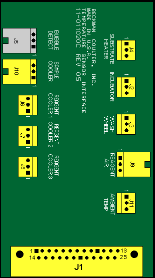

Temperature Sensor Interface PCB
Purpose
This document provides these details for the Temperature Interface PCB:
- Drawings.
- Details: Test Points, LEDs, Connector Overview, Connector Pin-outs.
- Schematics.
- Location.
Drawings


Details
The Temperature Sensor Interface PCB connects to these devices:
- DAQC PCB
- Thermistors.
Test Points - PCB - Interface - Temperature Sensor
LEDs - PCB - Interface - Temperature Sensor
Conn. Overview - PCB - Interface - Temperature Sensor
J1 - PCB - Interface - Temperature Sensor
J2 - PCB - Interface - Temperature Sensor
J3 - PCB - Interface - Temperature Sensor
J4 - PCB - Interface - Temperature Sensor
J5 - PCB - Interface - Temperature Sensor
J6 - PCB - Interface - Temperature Sensor
J7 - PCB - Interface - Temperature Sensor
J8 - PCB - Interface - Temperature Sensor
J9 - PCB - Interface - Temperature Sensor
Schematics
Page 1:
- Connectors: J1 - J11.
- Test Points: None.
- 011020C-1.pdf
Location
The Temperature Sensor Interface PCB is located on the instrument base plate to the right of the reagent pipettor 4 gantry.